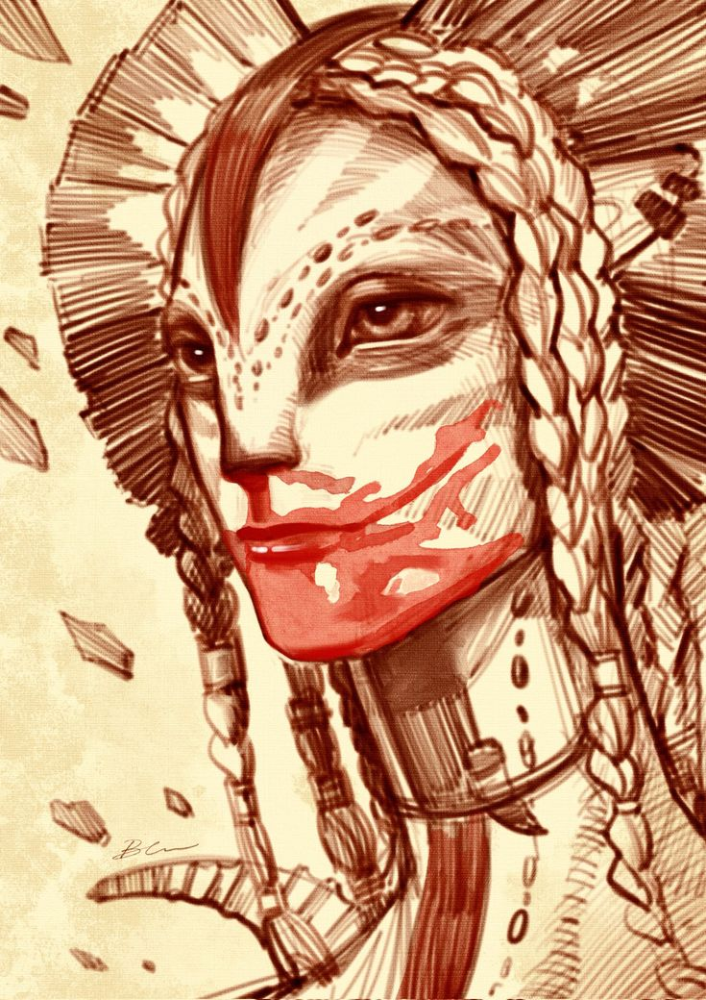
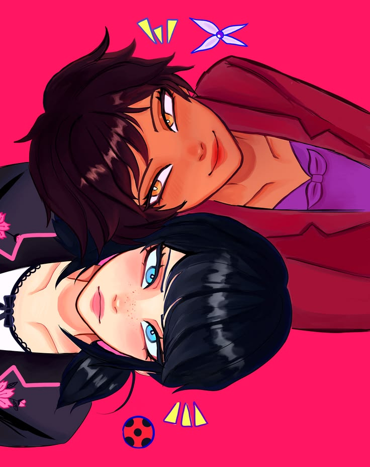
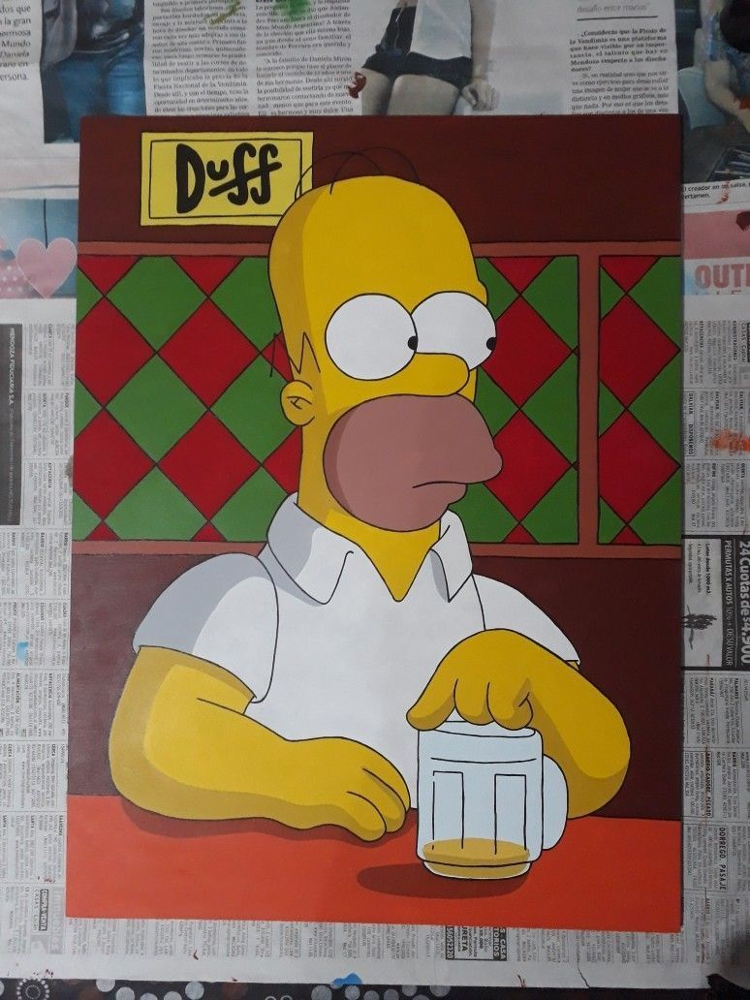
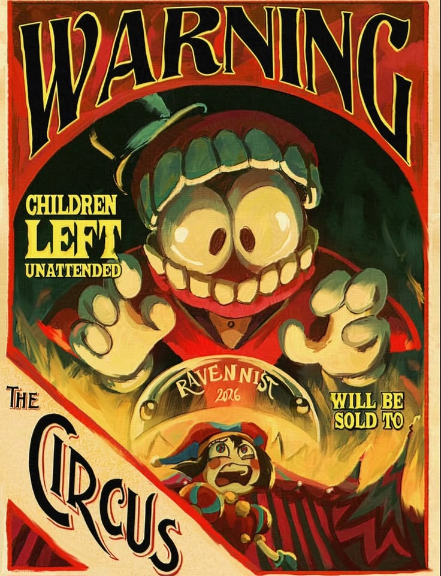
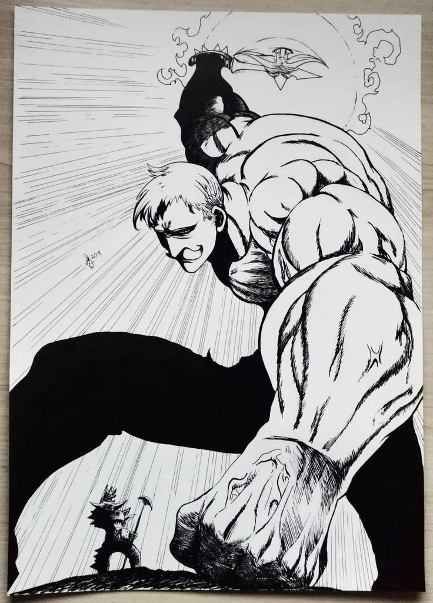

un rinconcito de imaginación...
Un mundo
creado por fans.
Dibujos, personajes e historias que nos hacen sentir como si viviéramos dentro de nuestros mundos favoritos.
Ven a curiosear ↓hecho con mucho amor y un poquito de magia ♡

NUESTRO
ARTE ♡
ARTE ♡
Nuestra forma de
ver las cosas ✷
〰
ver las cosas ✷
elige tu próximo destino ✧
Mi pequeño museo de fandoms
Cada imagen abre una galería diferente. ¡Explora la que más te guste!

Avatar ✿ Oel ngati kameie.
Ladybug ♡ Mi deseo se hará realidad.
Simpson ☁ Mmm... donas.
Digital circus ★ La oscuridad no es tan mala. Dragon boll ✦
¡Kakarotto!.
Dragon boll ✦
¡Kakarotto!.
 Barbie ✦
Tu puedes ser lo que quieras ser.
Barbie ✦
Tu puedes ser lo que quieras ser.

Los 7 pecados capitales ☁ No existe nadie en este mundo que esté por encima de mí.una notita para ti ♡
¿Qué es TurukiArt?
Es un rinconcito creado para quienes aman el arte y los universos de sus personajes favoritos. Aquí caben la imaginación, los dibujos, las historias y todas esas cosas que nos hacen decir: «¡me encanta este mundo!».
con cariño, TurukiArt ✿
gracias por pasar por aquí...